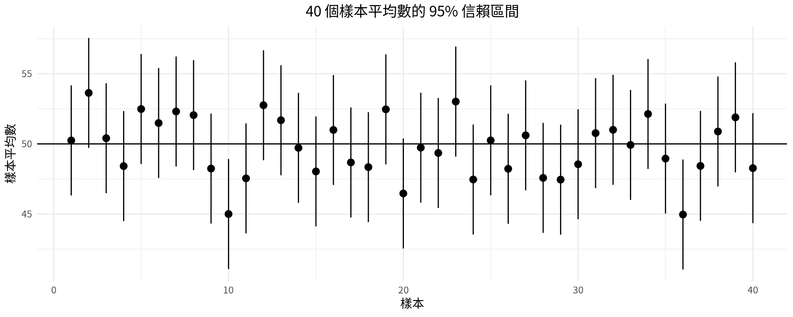
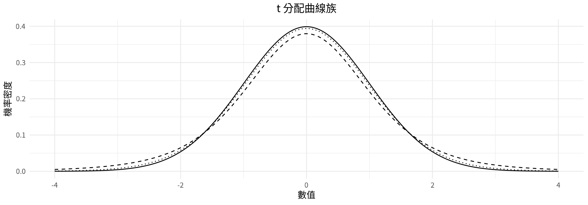
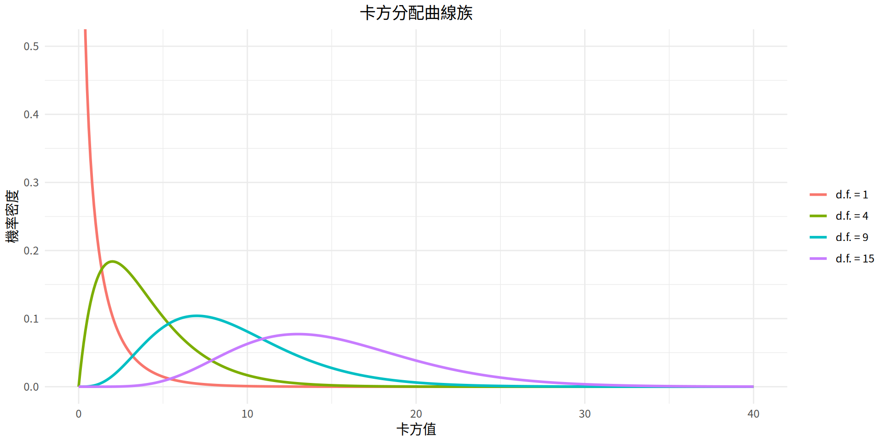

| Confidence | alpha | z |
|---|---|---|
| 90% | 0.10 | 1.645 |
| 95% | 0.05 | 1.960 |
| 99% | 0.01 | 2.576 |
統計學
第7章：信賴區間與樣本大小
劉昱佑
實踐大學
2026-09-20
本章概覽
第7章談的是估計——以樣本統計量估計母體參數，並附上信賴水準與所需的樣本大小。
| 節次 | 主題 |
|---|---|
| 7-1 | 估計；點估計；良好估計式的性質；區間估計；信賴水準與信賴區間；臨界值 z_{\alpha/2}；誤差界限 |
| 7-2 | \sigma 已知時平均數的信賴區間；假設條件；四捨五入規則；最小樣本大小 |
| 7-3 | t 分配；自由度；\sigma 未知時平均數的信賴區間；z 與 t 的取捨 |
本章概覽（續）
| 節次 | 主題 |
|---|---|
| 7-4 | 樣本比例 \hat{p} 與 \hat{q}；比例的信賴區間；最小樣本大小 |
| 7-5 | 卡方分配；變異數與標準差的信賴區間 |
本章學習目標
讀完本章後，你應該能夠
- 求 \sigma 已知時母體平均數的信賴區間。
- 決定求母體平均數信賴區間所需的最小樣本大小。
- 求 \sigma 未知時母體平均數的信賴區間。
- 求母體比例的信賴區間。
- 決定求母體比例信賴區間所需的最小樣本大小。
- 求變異數與標準差的信賴區間。
第7-1節：信賴區間
估計
推論統計的一個面向是估計：由樣本所得的資訊推估參數值的過程。
我們以樣本測度（統計量）估計母體測度（參數）——以樣本平均數估計母體平均數，以樣本比例估計母體比例。這樣使用的統計量稱為估計式。
估計
估計是由樣本所獲得的資訊推估某一參數值的過程。
本章各項程序的共同假設
- 樣本必須是隨機抽取的。
- 樣本大小 n \geq 30，或當 n < 30 時母體為常態或近似常態分配。
第二項假設可用第6章的方法檢查：看直方圖是否呈鐘形、檢查有無離群值，並觀察常態分位圖上的點是否接近一直線。
點估計
某大學校長隨機抽取 100 名學生，算得平均年齡為 22.3 歲。若據此推斷全體學生的平均年齡為 22.3 歲，這就是一個點估計。
點估計
點估計是對某一參數所做的單一數值估計。母體平均數 \mu 的最佳點估計是樣本平均數 \bar{X}。
良好估計式的三項性質
- 估計式應為不偏估計式——由特定大小的樣本所得各估計值的期望值（平均數）等於被估計的參數。
- 估計式應具一致性——隨著樣本數增加，估計式的值會趨近被估計的參數值。
- 估計式應為相對有效估計式——在所有可用來估計該參數的統計量中，它的變異數最小。
區間估計
由於抽樣誤差，樣本平均數幾乎總是與母體平均數有些差距，而且我們無從知道某一個點估計離 \mu 有多近。正因如此，統計學家偏好使用區間估計。
區間估計
某一參數的區間估計是用來估計該參數的一個區間或一段數值範圍。這個估計可能包含、也可能不包含被估計的參數值。
全體學生平均年齡的區間估計可能是 21.9 < \mu < 22.7，或 22.3 \pm 0.4 歲；比例的區間估計可能是 0.107 < p < 0.113，或 11\% \pm 0.3\%。
信賴區間也可以用括號寫成 (21.9,\ 22.7) 與 (10.7\%,\ 11.3\%)。
信賴水準與信賴區間
信賴水準
某一參數區間估計的信賴水準，是指在抽取大量樣本、並對同一參數重複進行估計程序的前提下，該區間估計包含此參數的機率。
信賴區間
信賴區間是利用樣本所得資料、並搭配指定的信賴水準所決定的特定區間估計。
常用的信賴區間有三種：90%、95% 與 99% 信賴區間。
信賴水準與信賴區間
母體的平均數或比例是一個固定值。由某一個樣本建構出的信賴區間，不是包含該參數、就是不包含。若對某特定大小的所有可能樣本都建構 95% 信賴區間，其中有 95% 會包含該母體參數。
若要更有信心——由 95% 提高到 99%——就必須把區間加寬。大學生平均年齡的 99% 信賴區間可能是 21.7 < \mu < 22.9，或 22.3 \pm 0.6。這其中存在取捨。
注意
信賴水準描述的是程序的長期表現，而不是某一個特定區間。區間一旦算出來，參數不是在裡面、就是不在裡面。
臨界值 z_{\alpha/2}
希臘字母 \alpha 代表標準常態分配曲線兩側尾端的總面積，\alpha/2 則代表每一側尾端的面積。z_{\alpha/2} 稱為臨界值。
所述的信賴水準即為 1 - \alpha 的百分比：
- 95% 信賴區間：\alpha = 0.05，因為 1 - 0.05 = 0.95
- 99% 信賴區間：\alpha = 0.01，因為 1 - 0.01 = 0.99
臨界值 z_{\alpha/2}
表 A-4 是查出這些臨界值的紙本途徑，qnorm() 則是 R 的途徑。95% 信賴區間取 z_{\alpha/2} = 1.960，99% 信賴區間取 z_{\alpha/2} = 2.576。
誤差界限
誤差界限
誤差界限（也稱為估計的最大誤差）是參數的點估計值與該參數真值之間最大的可能差距。
在學生年齡的例子中，信賴區間為 21.9 < \mu < 22.7 或 22.3 \pm 0.4，誤差界限即為 0.4。在比例區間 10.7\% < p < 11.3\% 或 11\% \pm 0.3\% 中，誤差界限為 0.003，即 0.3%。
對某一特定的 \alpha（例如 \alpha = 0.05），有 95% 的樣本平均數或樣本比例會落在母體平均數或母體比例兩側此一誤差值之內。
以 R 呈現 95% 信賴區間
Prepare data——自 \mu = 50、\sigma = 10 的母體重複抽取 n = 25 的樣本。
set.seed(2023)
pop_mean <- 50
pop_sd <- 10
sample_size <- 25
margin_error <- qnorm(0.975) * pop_sd / sqrt(sample_size)
intervals <- tibble(
sample_id = 1:40,
sample_mean = replicate(40, mean(rnorm(sample_size, pop_mean, pop_sd)))) |>
mutate(lower = sample_mean - margin_error,
upper = sample_mean + margin_error,
result = if_else(lower <= pop_mean & pop_mean <= upper,
"contains mu", "misses mu"))
sum(intervals$result == "contains mu")[1] 38以 R 呈現 95% 信賴區間
Draw figure

約有 95% 的區間包含 \mu；未包含的那些，正是抽樣變異必須付出的代價。
第7-2節：\sigma 已知時母體平均數的信賴區間
假設條件與公式
\sigma 已知時求平均數信賴區間的假設
- 樣本是隨機樣本。
- n \geq 30，或當 n < 30 時母體為常態分配。
穩健
當變數的分配可以稍微偏離常態、卻仍能得到有效結論時，該統計方法稱為穩健的。
估計母體平均數時應使用樣本平均數：從同一母體重複抽樣時，樣本平均數的變動小於中位數或眾數。
假設條件與公式
\sigma 已知時母體平均數信賴區間的公式
\bar{X} - z_{\alpha/2}\left(\frac{\sigma}{\sqrt{n}}\right) < \mu < \bar{X} + z_{\alpha/2}\left(\frac{\sigma}{\sqrt{n}}\right)
90% 信賴區間取 z_{\alpha/2} = 1.645；95% 信賴區間取 z_{\alpha/2} = 1.960；99% 信賴區間取 z_{\alpha/2} = 2.576。
其中 z_{\alpha/2}\left(\sigma/\sqrt{n}\right) 即為誤差界限。
平均數信賴區間的四捨五入規則
以原始資料計算母體平均數的信賴區間時，取到比原始資料多一位小數。
以樣本平均數與標準差計算時，取到與所給平均數相同位數的小數。
範例 7-1
台北飛大阪的空運運送時間
某台北承攬業者的物流分析師想估計由桃園運往大阪之空運貨件的平均運送時間（小時）。隨機抽取 49 批貨件，平均運送時間為 34.0 小時。公司歷年紀錄顯示母體標準差為 2.8 小時。求平均數的最佳點估計，以及母體平均數的 95% 信賴區間。
（模擬資料）
範例 7-1
解題
步驟 1 平均數的最佳點估計為 34.0 小時。
步驟 2 95% 信賴區間取 z_{\alpha/2} = 1.96。
34.0 - 1.96\left(\frac{2.8}{\sqrt{49}}\right) < \mu < 34.0 + 1.96\left(\frac{2.8}{\sqrt{49}}\right) 34.0 - 0.8 < \mu < 34.0 + 0.8 \mathbf{33.2 < \mu < 34.8}
範例 7-1
範例 7-2
跨境電商的訂單金額
某跨境電商團隊想知道台灣賣家寄往海外之訂單的平均金額（美元），隨機抽取 64 筆訂單，樣本平均數為 84.5 美元。假設母體標準差為 12.0 美元。求平均數的最佳點估計，以及母體平均數的 99% 信賴區間。
（模擬資料）
範例 7-2
解題
步驟 1 母體平均數的最佳點估計為 84.5 美元。
步驟 2 99% 信賴區間取 z_{\alpha/2} = 2.576。
84.5 - 2.576\left(\frac{12.0}{\sqrt{64}}\right) < \mu < 84.5 + 2.576\left(\frac{12.0}{\sqrt{64}}\right) 84.5 - 3.9 < \mu < 84.5 + 3.9 \mathbf{80.6 < \mu < 88.4}
範例 7-2
求其他的 z_{\alpha/2} 值
統計上有時會用到 90%、95%、99% 以外的信賴水準。以 98% 信賴區間為例，求 z_{\alpha/2} 的步驟是：
- 把 98% 化為 0.98，求 \alpha = 1 - 0.98 = 0.02。
- 除以 2：\alpha/2 = 0.02/2 = 0.01。
- 以 1.0000 - 0.01 = 0.9900 在表 A-4 中查出對應的 z 值；
qnorm(0.99)回傳同一個臨界值 z_{\alpha/2} = \mathbf{2.326}。
求其他的 z_{\alpha/2} 值
求信賴區間時，公式中只取正的 z 值。
| Confidence | alpha_half | z |
|---|---|---|
| 90% | 0.050 | 1.645 |
| 94% | 0.030 | 1.881 |
| 95% | 0.025 | 1.960 |
| 98% | 0.010 | 2.326 |
| 99% | 0.005 | 2.576 |
範例 7-3
高雄港的貨櫃停留時間
以下資料是高雄港 30 只進口貨櫃停留時間（單位：小時）的隨機樣本。假設母體標準差為 12.6 小時，求平均數的 90% 信賴區間。
36.42 28.15 51.70
19.83 44.26 33.08
62.55 25.71 40.19
47.63 30.94 22.38
55.02 38.47 29.66
43.81 26.50 58.24
34.75 49.12 21.07
31.89 45.33 27.46
53.18 37.62 24.91
41.05 32.27 46.88（模擬資料）
範例 7-3
解題
步驟 1 求資料的平均數：\bar{X} = 38.002 小時。母體標準差為 12.6 小時。
步驟 2 求 \alpha/2。90% 信賴區間下 \alpha = 1 - 0.90 = 0.10，故 \alpha/2 = 0.10/2 = 0.05。
步驟 3 求 z_{\alpha/2}。臨界值左側的面積為 1 - 0.05 = 0.9500，即表 A-4 中要查的那一欄；qnorm(0.95) 回傳同一個臨界值 z_{\alpha/2} = \mathbf{1.645}。
步驟 4 代入公式。
38.002 - 1.645\left(\frac{12.6}{\sqrt{30}}\right) < \mu < 38.002 + 1.645\left(\frac{12.6}{\sqrt{30}}\right) 38.002 - 3.784 < \mu < 38.002 + 3.784 \mathbf{34.218 < \mu < 41.786}
範例 7-3
解題
以 R 計算
dwell_hours <- c(36.42, 28.15, 51.70, 19.83, 44.26, 33.08, 62.55, 25.71, 40.19, 47.63,
30.94, 22.38, 55.02, 38.47, 29.66, 43.81, 26.50, 58.24, 34.75, 49.12,
21.07, 31.89, 45.33, 27.46, 53.18, 37.62, 24.91, 41.05, 32.27, 46.88)
sample_mean <- mean(dwell_hours)
pop_sd <- 12.6
margin_error <- qnorm(0.95) * pop_sd / sqrt(length(dwell_hours))
round(c(mean = sample_mean, margin = margin_error), 3) mean margin
38.002 3.784 [1] 34.218 41.786根據 30 只貨櫃的樣本，我們有 90% 的信心認為，所有進口貨櫃停留時間的母體平均數介於 34.218 小時與 41.786 小時之間。
估計平均數所需的樣本大小
究竟要多大的樣本才能做出準確的估計？答案取決於三件事：誤差界限、母體標準差與信賴程度。
此公式由誤差界限公式 E = z_{\alpha/2}\left(\sigma/\sqrt{n}\right) 解 n 而得：
E\sqrt{n} = z_{\alpha/2}\,\sigma \quad \Longrightarrow \quad \sqrt{n} = \frac{z_{\alpha/2} \cdot \sigma}{E}
母體平均數區間估計所需最小樣本大小的公式
n = \left(\frac{z_{\alpha/2} \cdot \sigma}{E}\right)^2
其中 E 為誤差界限。必要時將答案無條件進位成整數：只要結果有小數部分，就取下一個整數作為樣本大小 n。
範例 7-4
外送時間所需的樣本大小
台中某外送平台的營運主管想估計每筆訂單的平均外送時間，誤差要在 2 分鐘之內，並希望有 99% 的信心。先前的研究顯示標準差為 4.5 分鐘。她應該抽取幾筆訂單？
（模擬資料）
範例 7-4
解題
由於 \alpha = 0.01（即 1 - 0.99），z_{\alpha/2} = 2.576，E = 2。代入公式。
n = \left(\frac{z_{\alpha/2} \cdot \sigma}{E}\right)^2 = \left[\frac{(2.576)(4.5)}{2}\right]^2 = 33.59
[1] 33.59[1] 34進位後得 34。若要有 99% 的信心使估計值與真正平均數相差在 2 分鐘之內，該主管至少須抽取 34 筆訂單。
關於樣本大小的補充
注意
統計上多數情況採四捨五入；但決定樣本大小時，一律無條件進位到下一個整數。
實務要點
- 當母體很大或為無限母體、或採放回抽樣時，母體大小與樣本大小的計算無關。
- 公式需要 \sigma。若 \sigma 未知，可用先前樣本的標準差 s 估計，或以全距除以 4 估計。
- 區間估計常以文字敘述呈現：「兩人家庭每週平均花費 84 美元購買食品雜貨，在 95% 信心下誤差在 3 美元以內」，即 81 < \mu < 87。
第7-3節：\sigma 未知時母體平均數的信賴區間
t 分配
多數情況下 \sigma 並不知道，必須以樣本標準差 s 估計。使用 s 時——尤其樣本數較小時——需要比 z_{\alpha/2} 更大的臨界值，才能維持所述的信賴水準。這些值來自 Student’s t 分配。
t 分配的特性
與標準常態分配相似之處：
- 呈鐘形。
- 對平均數左右對稱。
- 平均數、中位數與眾數皆為 0，且位於分配的中央。
- 曲線趨近但永不接觸 x 軸。
與標準常態分配相異之處：
- 變異數大於 1。
- t 分配其實是依自由度而定的一族曲線，自由度與樣本大小有關。
- 隨著樣本數增加，t 分配趨近標準常態分配。
t 分配曲線族
Prepare data
t 分配曲線族
Draw figure

自由度
自由度
自由度是在算出某一樣本統計量之後，仍可自由變動的數值個數；當一個分配是由一族曲線構成時，自由度告訴研究者該用哪一條曲線。
若 5 個數值的平均數是 10，則其中 4 個可以自由變動；一旦前 4 個確定，第 5 個就必須是特定的數，好讓總和等於 50。因此 \text{d.f.} = 5 - 1 = 4。
自由度以 d.f. 表示。求平均數的信賴區間時，\text{d.f.} = n - 1。（本書後面某些檢定的自由度不是 n - 1。）
注意
t_{\alpha/2} 取自表 A-5 最上方標示 Confidence Intervals 的那一列；標示 One tail 與 Two tails 的兩列屬於第8章，此處不可使用。當自由度大於 30 且落在兩個表列值之間時，查表的慣例是無條件捨去到較小的表列值（較保守的作法）：d.f. = 68 視為 65。此慣例只是查表的輔助；qt() 接受確切的自由度，兩者不一致時，投影片一律採用 R 算出的值。
範例 7-5
查出 t 臨界值
樣本大小為 18 時，求 95% 信賴區間的 t_{\alpha/2} 值。
範例 7-5
\sigma 未知時平均數的公式
\sigma 未知時母體平均數信賴區間的公式
\bar{X} - t_{\alpha/2}\left(\frac{s}{\sqrt{n}}\right) < \mu < \bar{X} + t_{\alpha/2}\left(\frac{s}{\sqrt{n}}\right)
自由度為 n - 1。
\sigma 未知時求平均數信賴區間的假設
- 樣本是隨機樣本。
- n \geq 30，或當 n < 30 時母體為常態分配。
範例 7-6
台北商務旅館的平日住房率
隨機抽取 16 家台北商務旅館，平日平均住房率為 72.4%，樣本標準差為 6.8 個百分點。假設該變數為常態分配，求平日住房率之母體平均數的 95% 信賴區間。
（模擬資料）
範例 7-6
解題
\bar{X} = 72.4、s = 6.8、n = 16。
由於 \sigma 未知而必須以 s 取代，因此使用 t 分配。自由度為 15 時，t_{\alpha/2} = 2.131。
72.4 - 2.131\left(\frac{6.8}{\sqrt{16}}\right) < \mu < 72.4 + 2.131\left(\frac{6.8}{\sqrt{16}}\right) 72.4 - 3.6 < \mu < 72.4 + 3.6 \mathbf{68.8 < \mu < 76.0}
範例 7-6
解題
以 R 計算
[1] 3.6[1] 68.8 76.0我們有 95% 的信心認為，台北商務旅館平日住房率的母體平均數介於 68.8% 與 76.0% 之間。
範例 7-7
夜市攤位的月營業額
以下資料是某夜市飲料攤位月營業額（單位：新台幣千元）隨機抽取 7 個月的樣本。求月營業額之平均數的 99% 信賴區間。
268 292 305 318 331 347 384（模擬資料）
範例 7-7
解題
步驟 1 求資料的平均數與標準差：\bar{X} = 320.7，s = 38.0。
步驟 2 求 99% 信賴區間、\text{d.f.} = 6 的 t_{\alpha/2}。表 A-5 與 qt(0.995, df = 6) 都給出 3.707。
步驟 3 代入公式求解。
320.7 - 3.707\left(\frac{38.0}{\sqrt{7}}\right) < \mu < 320.7 + 3.707\left(\frac{38.0}{\sqrt{7}}\right) 320.7 - 53.2 < \mu < 320.7 + 53.2 \mathbf{267.5 < \mu < 373.9}
範例 7-7
解題
以 R 計算
monthly_revenue <- c(268, 292, 305, 318, 331, 347, 384)
sample_size <- length(monthly_revenue)
sample_mean <- mean(monthly_revenue)
sample_sd <- sd(monthly_revenue)
margin_error <- qt(0.995, df = sample_size - 1) * sample_sd / sqrt(sample_size)
round(c(mean = sample_mean, sd = sample_sd, margin = margin_error), 1) mean sd margin
320.7 38.0 53.2 [1] 267.5 373.9根據 7 個月的樣本，我們有 99% 的信心認為，該攤位月營業額的母體平均數介於 267.5 千元與 373.9 千元之間。
該用 z 還是 t
判斷準則（圖 7-8）
- \sigma 已知嗎？ 已知：公式中使用 z_{\alpha/2} 與 \sigma。
- \sigma 已知嗎？ 未知：公式中使用 t_{\alpha/2} 與 s。
無論哪一種情形，若 n < 30，該變數都必須為常態分配。
該用 z 還是 t
knitr::kable(data.frame(
Situation = c("sigma known, n >= 30", "sigma known, n < 30 (normal)",
"sigma unknown, n >= 30", "sigma unknown, n < 30 (normal)"),
Use = c("z and sigma", "z and sigma", "t and s", "t and s"),
R = c("qnorm(1 - alpha/2)", "qnorm(1 - alpha/2)",
"qt(1 - alpha/2, df = n - 1)", "qt(1 - alpha/2, df = n - 1)")),
align = "c")| Situation | Use | R |
|---|---|---|
| sigma known, n >= 30 | z and sigma | qnorm(1 - alpha/2) |
| sigma known, n < 30 (normal) | z and sigma | qnorm(1 - alpha/2) |
| sigma unknown, n >= 30 | t and s | qt(1 - alpha/2, df = n - 1) |
| sigma unknown, n < 30 (normal) | t and s | qt(1 - alpha/2, df = n - 1) |
第7-4節：比例的信賴區間與樣本大小
比例
比例代表整體中的一部分，可以用分數、小數或百分比表示。若某快遞在台北配送的包裹中有 12% 送往超商取貨點，則 12\% = 0.12 = \frac{12}{100} = \frac{3}{25}，而隨機抽出一件包裹送往超商取貨點的機率為 0.12。
比例的符號
p = \text{母體比例} \qquad \hat{p} = \text{樣本比例（讀作 "p hat"）}
樣本比例為
\hat{p} = \frac{X}{n} \qquad \text{且} \qquad \hat{q} = \frac{n - X}{n} \quad \text{或} \quad \hat{q} = 1 - \hat{p}
其中 X 為樣本中具有所關切特徵的單位數，n 為樣本大小。
當 \hat{p} 與 \hat{q} 以小數或分數表示時，\hat{p} + \hat{q} = 1；以百分比表示時，\hat{p} + \hat{q} = 100\%。母體亦然：p + q = 1。
範例 7-8
超商取貨
隨機抽取某台灣電商平台的 180 位網購消費者，其中 63 人選擇超商取貨而非宅配到府。求 \hat{p} 與 \hat{q}，其中 \hat{p} 為選擇超商取貨的消費者比例。
（模擬資料）
範例 7-8
解題
本例中 X = 63、n = 180。
\hat{p} = \frac{X}{n} = \frac{63}{180} = 0.35 = 35\% \hat{q} = \frac{n - X}{n} = \frac{180 - 63}{180} = \frac{117}{180} = 0.65 = 65\%
p_hat q_hat
0.35 0.65 因此有 65% 的消費者選擇宅配到府。
比例的信賴區間
p 的點估計使用樣本比例 \hat{p}，它是不偏、一致且相對有效的估計式。當樣本數不超過母體的 5% 時，\hat{p} 的抽樣分配近似常態，其平均數為 p、標準差為 \sqrt{pq/n}。
比例信賴區間的公式
\hat{p} - z_{\alpha/2}\sqrt{\frac{\hat{p}\hat{q}}{n}} < p < \hat{p} + z_{\alpha/2}\sqrt{\frac{\hat{p}\hat{q}}{n}}
適用條件為 n\hat{p} 與 n\hat{q} 皆大於或等於 5。其誤差界限為 E = z_{\alpha/2}\sqrt{\hat{p}\hat{q}/n}。
比例的信賴區間
求母體比例信賴區間的假設
- 樣本是隨機樣本。
- 滿足二項實驗的各項條件（見第5章）。
比例信賴區間的四捨五入規則
取到小數第三位。
注意
題目若直接給出某個百分比，將其化為小數後即為 \hat{p}。若申請者中有 12% 為男性，則 \hat{p} = 0.12。
範例 7-9
桃園機場的轉機體驗
桃園國際機場的旅客調查抽取 1250 位轉機旅客，其中 375 位認為轉機體驗「非常好」。求認為轉機體驗非常好之旅客真實比例的 90% 信賴區間。
（模擬資料）
範例 7-9
解題
步驟 1 求 \hat{p} 與 \hat{q}。
\hat{p} = \frac{X}{n} = \frac{375}{1250} = 0.30 \qquad \hat{q} = 1 - \hat{p} = 1.00 - 0.30 = 0.70
步驟 2 求臨界值。\alpha = 1 - 0.90 = 0.10，故 \alpha/2 = 0.05，z_{\alpha/2} = 1.645。
步驟 3 代入公式。
0.30 - 1.645\sqrt{\frac{(0.30)(0.70)}{1250}} < p < 0.30 + 1.645\sqrt{\frac{(0.30)(0.70)}{1250}} 0.30 - 0.021 < p < 0.30 + 0.021 \mathbf{0.279 < p < 0.321} \qquad \text{或} \qquad 27.9\% < p < 32.1\%
範例 7-9
解題
以 R 計算
p_hat n_p_hat n_q_hat
0.3 375.0 875.0 [1] 0.021[1] 0.279 0.321我們有 90% 的信心認為，認為轉機體驗非常好的旅客比例介於 27.9% 與 32.1% 之間。
範例 7-10
向海外賣家購物
一項針對台灣 2400 位網購消費者的調查顯示，64% 在過去一年中至少向海外賣家買過一件商品。求向海外賣家購物之真實比例的 90% 信賴區間。
（模擬資料）
範例 7-10
解題
步驟 1 求 \hat{p} 與 \hat{q}。本例已直接給出 \hat{p}：64%，即 0.64。故 \hat{q} = 1 - 0.64 = 0.36。
步驟 2 求臨界值。\alpha = 1 - 0.90 = 0.10，故 \alpha/2 = 0.05，z_{\alpha/2} = 1.645。
步驟 3 代入公式。
0.64 - 1.645\sqrt{\frac{(0.64)(0.36)}{2400}} < p < 0.64 + 1.645\sqrt{\frac{(0.64)(0.36)}{2400}} 0.64 - 0.016 < p < 0.64 + 0.016 \mathbf{0.624 < p < 0.656} \qquad \text{或} \qquad 62.4\% < p < 65.6\%
範例 7-10
比例所需的樣本大小
母體比例區間估計所需最小樣本大小的公式
n = \hat{p}\hat{q}\left(\frac{z_{\alpha/2}}{E}\right)^2
必要時無條件進位成整數。
需要分成兩種情況考慮：
- 若已有 \hat{p} 的某個近似值（例如來自先前的研究），即以該值代入公式。
- 若沒有 \hat{p} 的任何近似值，則取 \hat{p} = 0.5。因為 \hat{p} = \hat{q} = 0.5 時乘積 \hat{p}\hat{q} 最大，如此可確保樣本夠大、預測足夠準確。
第二種作法的缺點是可能得到比實際所需更大的樣本。
比例所需的樣本大小
準備資料
乘積 \hat{p}\hat{q} 在 \hat{p} = \hat{q} = 0.5 時最大；採用最大值可在既定的誤差界限與信賴區間下，得到最大可能的 n。
比例所需的樣本大小
範例 7-11
結帳使用行動支付
某市場研究團隊想以 95% 的信心估計台灣網購消費者結帳時使用行動支付的比例。先前的研究顯示有 65% 的消費者這麼做。團隊希望誤差在真實比例的 3% 之內。求所需的最小樣本大小。
（模擬資料）
接續範例 7-12
範例 7-11
解題
由於 z_{\alpha/2} = 1.960、E = 0.03、\hat{p} = 0.65、\hat{q} = 0.35，因此
n = \hat{p}\hat{q}\left(\frac{z_{\alpha/2}}{E}\right)^2 = (0.65)(0.35)\left(\frac{1.960}{0.03}\right)^2 = 971.04
[1] 971.04[1] 972進位後為須訪問 972 位消費者。
範例 7-12
沒有先前研究時
承範例 7-11，假設先前並未做過任何研究，因此沒有 \hat{p} 的近似值。求誤差在真實比例 3% 之內所需的最小樣本大小。
範例 7-12
解題
此處不知道 \hat{p} 與 \hat{q} 的值，因此取 \hat{p} = 0.5、\hat{q} = 0.5，並以 E = 0.03、z_{\alpha/2} = 1.960 代入。
n = \hat{p}\hat{q}\left(\frac{z_{\alpha/2}}{E}\right)^2 = (0.5)(0.5)\left(\frac{1.960}{0.03}\right)^2 = 1067.07
[1] 1067.07[1] 1068因此在 \hat{p} 未知時須訪問 1068 位消費者——比 \hat{p} 已知時多了 96 位。
比例所需的樣本大小
注意
決定樣本大小時，母體的大小無關緊要。只需要信賴程度與誤差界限兩項資訊即可決定。
第7-5節：變異數與標準差的信賴區間
卡方分配
在統計上，變數的變異數與標準差和平均數同等重要。製造必須互相接合的水管時，管徑的變異必須夠小；製造藥品時，藥錠中藥量的變異數決定病患能否獲得正確劑量。
要計算這類信賴區間，需要一個新的分配：卡方分配，記為 \chi^2（希臘字母 chi，讀作「kai」）。當由變異數為 \sigma^2 的常態母體隨機抽樣時，(n-1)s^2/\sigma^2 的各個值即構成卡方分配。
卡方分配的特性
- 所有卡方值都大於或等於 0。
- 卡方分配是依自由度而定的一族曲線。
- 每一條卡方分配曲線下的面積等於 1。
- 卡方分配為右偏。
自由度約達 100 時，卡方分配會變得相當對稱。
卡方分配曲線族
Prepare data
卡方分配曲線族
Draw figure

查出兩個臨界值
由於卡方分配不對稱，公式中要使用兩個不同的值：\chi^2_{\text{left}} 與 \chi^2_{\text{right}}。
表 A-6 的左欄為自由度，最上一列為臨界值右側的面積。以 95% 信賴區間為例：
- 把 95% 化為小數並以 1 減去：1 - 0.95 = 0.05。
- 除以 2：\alpha/2 = 0.05/2 = 0.025。此欄給出 \chi^2_{\text{right}}。
- 以 1 減去 \alpha/2：1 - 0.025 = 0.975。此欄給出 \chi^2_{\text{left}}。
- 查 \text{d.f.} = n - 1 所在的列。
注意
若表 A-6 中沒有所需的自由度，使用表中最接近的較小值。例如 \text{d.f.} = 53 時改用 \text{d.f.} = 50。這是查表時較保守的作法；qchisq() 接受確切的自由度，兩者不一致時，投影片一律採用 R 算出的值。
範例 7-13
查出卡方臨界值
n = 20 時，求 95% 信賴區間的 \chi^2_{\text{right}} 與 \chi^2_{\text{left}}。
範例 7-13
解題
求 \chi^2_{\text{right}}：先算 1 - 0.95 = 0.05，再將 0.05 除以 2 得 0.025。 求 \chi^2_{\text{left}}：再算 1 - 0.025 = 0.975。
然後以 \text{d.f.} = n - 1 = 20 - 1 = 19 查表 A-6 的 0.975 與 0.025 兩欄。
\chi^2_{\text{right}} = 32.852 \qquad \chi^2_{\text{left}} = 8.907
變異數與標準差的公式
變異數信賴區間的公式
\frac{(n-1)s^2}{\chi^2_{\text{right}}} < \sigma^2 < \frac{(n-1)s^2}{\chi^2_{\text{left}}} \qquad \text{d.f.} = n - 1
標準差信賴區間的公式
\sqrt{\frac{(n-1)s^2}{\chi^2_{\text{right}}}} < \sigma < \sqrt{\frac{(n-1)s^2}{\chi^2_{\text{left}}}} \qquad \text{d.f.} = n - 1
\sigma^2 與 \sigma 的有用估計值分別是 s^2 與 s。題目若給的是樣本標準差 s，代入時務必先平方；若給的是樣本變異數 s^2，則不要再平方，因為變異數已是平方單位。
變異數與標準差的公式
求變異數或標準差信賴區間的假設
- 樣本是隨機樣本。
- 母體必須為常態分配。
變異數或標準差信賴區間的四捨五入規則
以原始資料計算時，取到比原始資料多一位小數。
以樣本變異數或標準差計算時，取到與所給樣本變異數或標準差相同位數的小數。
範例 7-14
批次不良率的變異
某電子廠的品管工程師抽驗 30 個生產批次，發現不良率（每千件的不良品數）的標準差為 1.6。求不良率之變異數與標準差的 95% 信賴區間。假設該變數為常態分配。
（模擬資料）
範例 7-14
解題
由於 \alpha = 0.05、自由度為 29，兩個臨界值為 \chi^2_{\text{left}} = 16.047 與 \chi^2_{\text{right}} = 45.722。
\frac{(30-1)(1.6)^2}{45.722} < \sigma^2 < \frac{(30-1)(1.6)^2}{16.047} \mathbf{1.62 < \sigma^2 < 4.63}
標準差方面，將兩個上下限各取平方根：
\mathbf{1.27 < \sigma < 2.15}
範例 7-14
解題
以 R 計算
[1] 45.722 16.047[1] 1.62 4.63[1] 1.27 2.15根據 30 個批次的樣本，我們有 95% 的信心認為不良率的真實變異數介於 1.62 與 4.63 之間，真實標準差介於 1.27 與 2.15 之間。
範例 7-15
客服中心的每日來電量
求某客服中心每日來電件數之變異數與標準差的 90% 信賴區間。所用樣本為隨機抽取的 10 天。假設其分配近似常態。
124 127 130 130 135
140 148 155 158 163（模擬資料）
範例 7-15
解題
步驟 1 求資料的變異數：s^2 = 198。
步驟 2 以 10 - 1 = 9 的自由度，由表 A-6 查 \chi^2_{\text{right}} 與 \chi^2_{\text{left}}。取 \alpha/2 = 0.05 與 1 - \alpha/2 = 0.95：\chi^2_{\text{right}} = 16.919，\chi^2_{\text{left}} = 3.325。
步驟 3 代入公式。
\frac{(10-1)(198)}{16.919} < \sigma^2 < \frac{(10-1)(198)}{3.325} \mathbf{105.3 < \sigma^2 < 535.9} \sqrt{105.3} < \sigma < \sqrt{535.9} \qquad \Longrightarrow \qquad \mathbf{10.3 < \sigma < 23.1}
範例 7-15
解題
以 R 計算
[1] 198[1] 16.919 3.325[1] 105.3 535.9[1] 10.3 23.1根據隨機抽取的 10 天，我們有 90% 的信心認為每日來電件數的標準差介於 10.3 件與 23.1 件之間。
重要名詞
第7章詞彙
假設 · 卡方分配 · 信賴區間 · 信賴水準 · 一致估計式 · 自由度 · 估計 · 估計式 · 區間估計 · 誤差界限 · 點估計 · 比例 · 相對有效估計式 · 穩健 · t 分配 · 不偏估計式
重要公式
母體平均數的信賴區間
\sigma 已知時母體平均數的信賴區間（當 n \geq 30 且 \sigma 未知時可用 s 代替）：
\bar{X} - z_{\alpha/2}\left(\frac{\sigma}{\sqrt{n}}\right) < \mu < \bar{X} + z_{\alpha/2}\left(\frac{\sigma}{\sqrt{n}}\right)
\sigma 未知時母體平均數的信賴區間，\text{d.f.} = n - 1：
\bar{X} - t_{\alpha/2}\left(\frac{s}{\sqrt{n}}\right) < \mu < \bar{X} + t_{\alpha/2}\left(\frac{s}{\sqrt{n}}\right)
估計平均數所需的樣本大小，其中 E 為誤差界限：
n = \left(\frac{z_{\alpha/2} \cdot \sigma}{E}\right)^2
重要公式
比例、變異數與標準差
比例的信賴區間，其中 \hat{p} = X/n、\hat{q} = 1 - \hat{p}：
\hat{p} - z_{\alpha/2}\sqrt{\frac{\hat{p}\hat{q}}{n}} < p < \hat{p} + z_{\alpha/2}\sqrt{\frac{\hat{p}\hat{q}}{n}} \qquad n = \hat{p}\hat{q}\left(\frac{z_{\alpha/2}}{E}\right)^2
變異數與標準差的信賴區間，\text{d.f.} = n - 1：
\frac{(n-1)s^2}{\chi^2_{\text{right}}} < \sigma^2 < \frac{(n-1)s^2}{\chi^2_{\text{left}}} \qquad \sqrt{\frac{(n-1)s^2}{\chi^2_{\text{right}}}} < \sigma < \sqrt{\frac{(n-1)s^2}{\chi^2_{\text{left}}}}
重點整理
重點
- 估計是以樣本統計量推估參數；良好的估計式應為不偏、一致且相對有效，而 \bar{X} 是 \mu 的最佳點估計
- 點估計是單一數值，區間估計是一段範圍，其信賴水準是這類區間長期而言捕捉到參數的機率
- 誤差界限（估計的最大誤差）是點估計與參數之間最大的可能差距；信賴水準越高，區間越寬
- \sigma 已知時用 z_{\alpha/2} 與 \sigma；\sigma 未知時用 t_{\alpha/2} 與 s，且 \text{d.f.} = n - 1——若 n < 30，變數必須為常態分配
- 樣本大小由 n = \left(z_{\alpha/2}\sigma/E\right)^2 與 n = \hat{p}\hat{q}\left(z_{\alpha/2}/E\right)^2 求得，且一律無條件進位；母體大小無關緊要
- 比例方面，\hat{p} = X/n、\hat{q} = 1 - \hat{p}，區間需滿足 n\hat{p} \geq 5 與 n\hat{q} \geq 5，上下限取到小數第三位；\hat{p} 未知時取 \hat{p} = 0.5
- \sigma^2 與 \sigma 的信賴區間使用右偏的卡方分配與兩個臨界值，且必須假設母體為常態分配
Acknowledgement
Copyright notice. These teaching materials follow the organization and terminology of Bluman, A. G. (2023). Elementary statistics: A step by step approach (11th ed.). McGraw Hill. All rights in the original work are reserved by its authors and publishers.
Original examples. Every worked example, data set, and R script in these slides was written for this course. The data are hypothetical unless stated otherwise.
Non-commercial use only. These materials are strictly intended for educational purposes and must not be used for commercial gain or profit.
Proper attribution. Any reproduction, distribution, or use of these materials must provide proper attribution to the original source.

Elementary Statistics: A Step by Step Approach